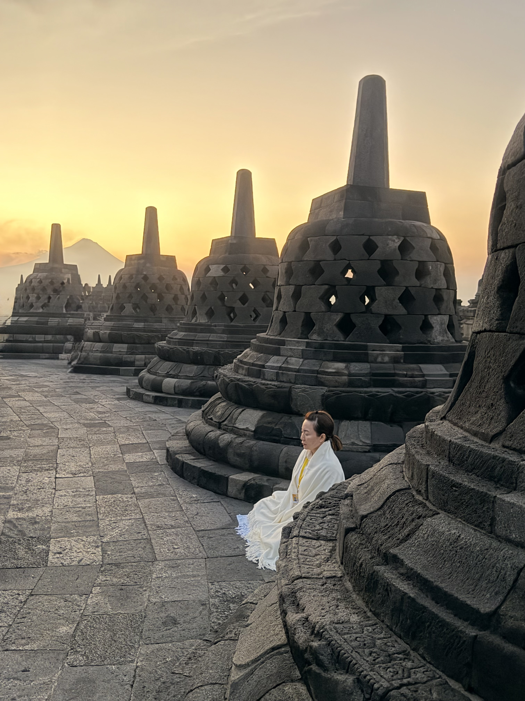
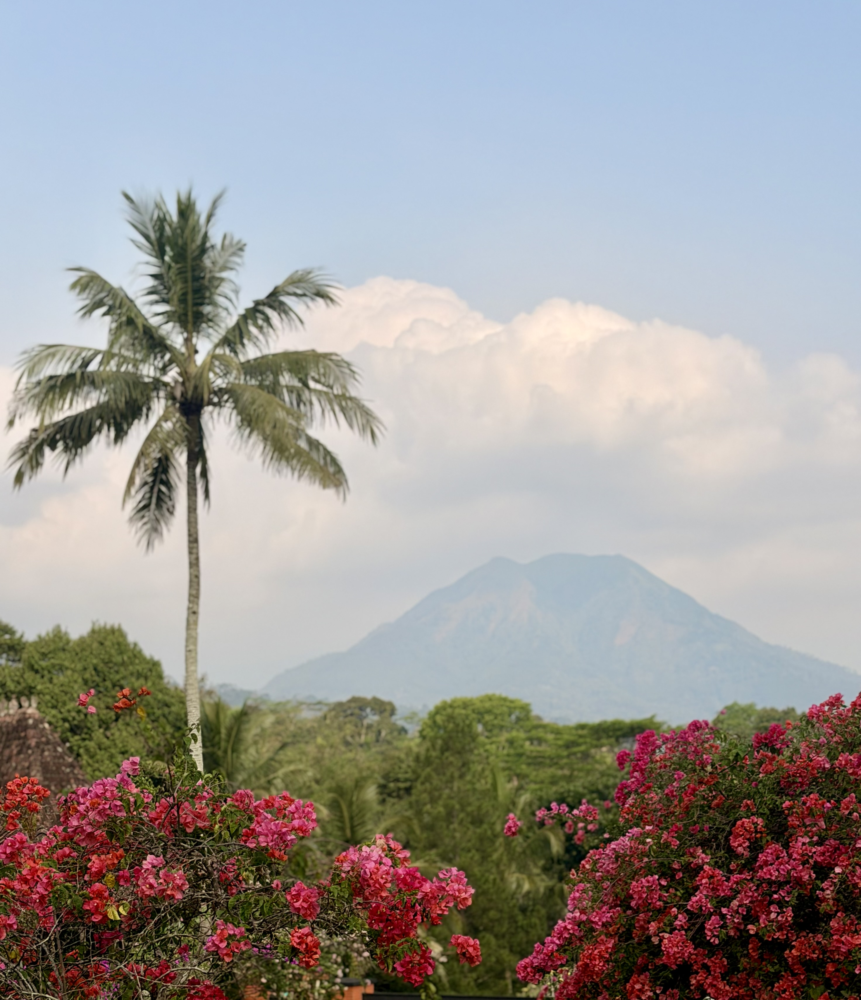
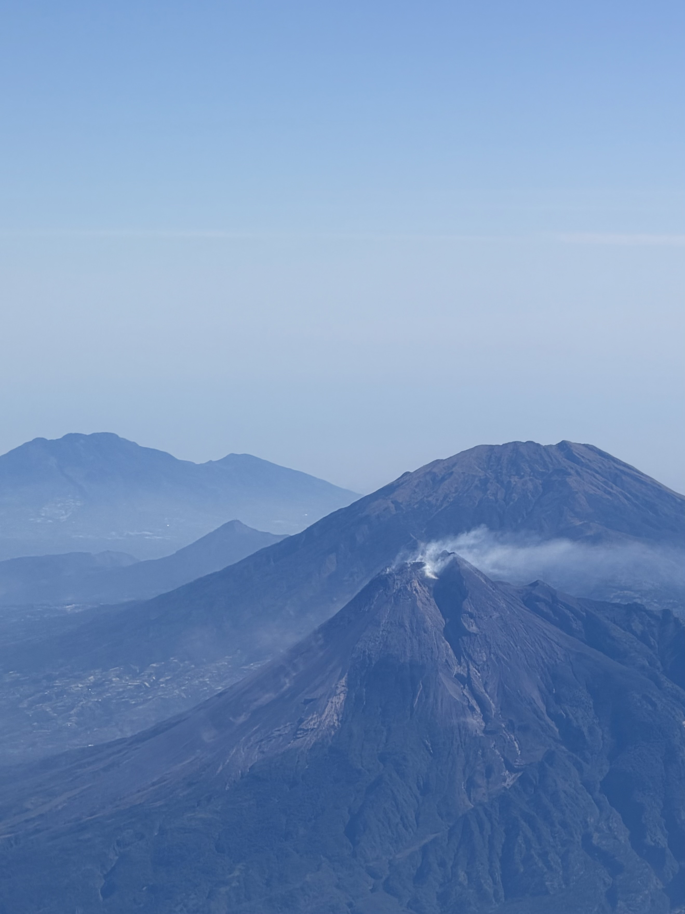
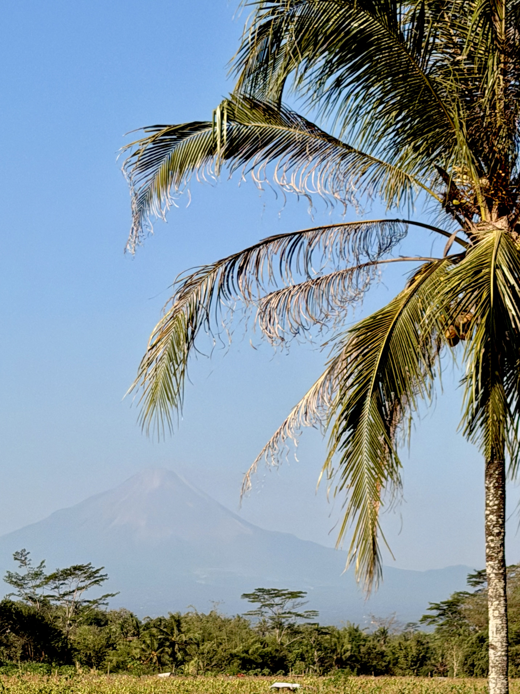
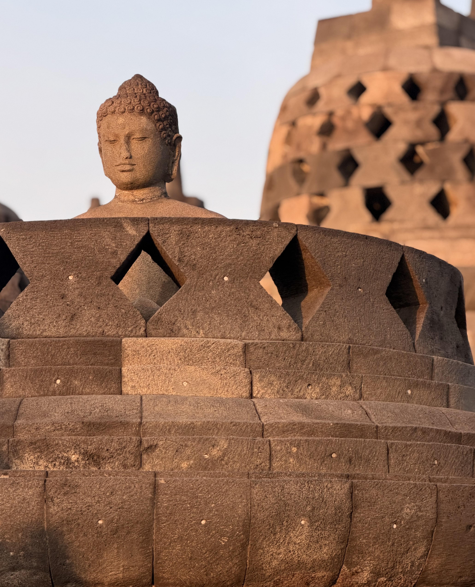

Journey 01
Central Java,
Indonesia
Ancient temples, volcanic landscapes and the kind of peaceful mornings that stay with you long after the journey ends.
Begin the Journey
Indonesia
Some destinations make an impression the moment you arrive. Central Java reveals itself more slowly. It begins before sunrise, walking quietly through the ancient stones of Borobudur as the first light spills across the surrounding valleys. By afternoon you're winding through emerald rice fields, passing sleepy villages and volcanic landscapes that feel untouched by time.
While Borobudur may be the headline attraction, it's only one chapter of the story. What made this journey unforgettable was the contrast between moments of quiet reflection, luxurious countryside retreats and the everyday rhythm of life that unfolds beyond the temples. It felt authentic, peaceful and wonderfully unhurried.

The Experience
Watching the sun rise over Borobudur is one of those travel moments that genuinely lives up to the anticipation. As the mist slowly lifts from the surrounding jungle and volcanic peaks begin to emerge on the horizon, the temple feels less like a monument and more like part of the landscape itself.
Yet the memories we carried home weren't limited to the temple. They were found in quiet drives through the countryside, warm conversations with locals, the scent of fresh coffee drifting across the plantations and evenings spent surrounded by forests and mountains. Central Java has a way of slowing everything down, encouraging you to look beyond the famous landmarks and appreciate the journey between them.

Sunrise at Borobudur
There's a reason people wake long before dawn to visit Borobudur. As darkness gives way to soft morning light, the temple slowly emerges from the mist, revealing centuries-old stone stupas against a backdrop of distant volcanoes. It's remarkably peaceful, with only the sounds of birds and quiet footsteps echoing through the complex.
Arriving early not only rewards you with the best light for photography, but also allows you to experience the temple before the crowds arrive. Standing among one of the world's greatest Buddhist monuments as the sun rises over Central Java is a moment that's difficult to put into words—and one that will stay with you long after you've left Indonesia.

Beyond the Temples
While Borobudur is undoubtedly the highlight, some of our favourite memories came from exploring everything around it. Quiet country roads weave through rice fields, coffee plantations and villages where daily life continues much as it has for generations.
Central Java isn't a place to rush. Allow yourself time to linger over long lunches, stop whenever a mountain view catches your eye and enjoy the slower pace that makes this region feel so authentic. It's these quieter moments that transformed our visit from a sightseeing trip into one of our favourite journeys through Indonesia.

The Landscape
Central Java's dramatic scenery is never far away. Volcanic peaks rise above dense jungle and fertile farmland, creating landscapes that feel both wild and peaceful at the same time. Every journey between destinations offers another unforgettable view.
Whether you're watching clouds drift around distant mountains or driving through endless green countryside, the scenery becomes just as memorable as the temples themselves. It's this combination of culture and nature that makes Central Java such a rewarding destination.

Our Favourite Stay
Hidden among the hills overlooking Borobudur, Le Temple offers an intimate retreat that perfectly complements the surrounding landscape. With only a handful of suites, personalised service and panoramic views across the valley, it feels wonderfully secluded without being far from the temple itself.

Also Recommended
Set within a working coffee plantation surrounded by mountains, MesaStila is one of Indonesia's most distinctive luxury retreats. Elegant colonial architecture, exceptional dining and one of the country's finest spas make it the perfect place to unwind after exploring Central Java.
Camera Roll





Planning Your Own Journey